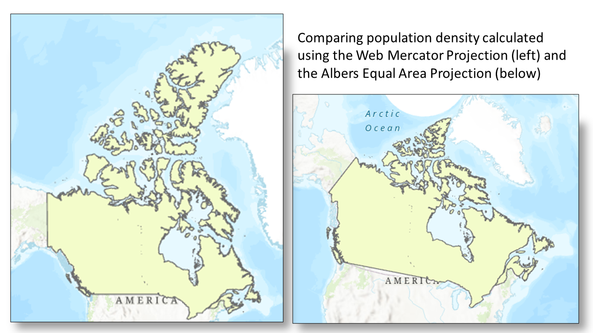
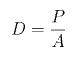
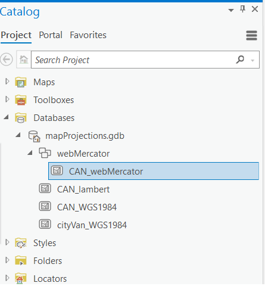
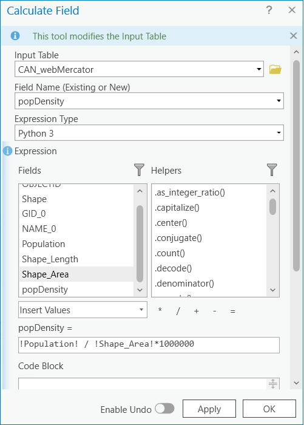

Exercise 4: Calculating Population Density
Created by June Skeeter.

Your choice of map projection can affect the accuracy of your analysis. This exercise will demonstrate how different projections affect areal analysis using population density (D), which is calculated using the formula below, where (P) represents population and (A) is the area.

1 Go to the Population Density map tab.
2 Expand the webMercator Feature Dataset to see the CAN_webMercator layer inside it.
- A Feature Dataset is: a collection of feature classes within a geodatabase that have common properties (eg. projections). When we create a feature dataset, we can specify a projection. Then any layer we add to the feature dataset, will be re-projected to match. This is a very useful feature to help keep everything organized.

Create a new Feature Dataset
3 In the catalog pane, right click on the mapProjections.gdb and select “New Feature Dataset”. Name it “Albers” and make sure to set the coordinate system to “Canada Albers Equal Area Conic”. See the video below for reference.
4 Right click the newly created Albers feature dataset and select Import > Feature Class. Then import the CAN_webMercator layer, renaming it as CAN_albersEA. The layer will be automatically re-projected from the Web Mercator projection to the Canada Albers Equal Area Conic projection.
- Note the projection of the Map Frame is still in the WebMercator. If you’d like to change it to the ALbers projection, follow the steps outlined in Exercise 3.
Inspect the Attribute Tables
5 Right-click the CAN_webMercator layer in the Contents pane and click Attribute table to open it.
This layer is in the WGS 1984 Web Mercator Auxiliary Sphere projection, which is used in many web mapping applications, including Google Maps and ArcGIS Online.
6 Open the attribute table for the CAN_albersEA layer too, which is in the Canada Albers Equal Area Conic projection. Recall that this projection preserves area.
7 Right-click on the tab of one of the open attribute tables and select New Horizontal Tab Group. This will stack the two tables on top of one another so you can view the fields in each table at the same time.
The Population field represents the approximate population of Canada as of the 2021 Census. The Shape_Area field is automatically calculated by the software for feature classes (but not shapefiles). The area represents the area of Canada in meters.
Reflection Question
(Click the text for the answer)
Why are the numbers representing area different for the two projections?
The Web Mercator projection does not minimize distortion except for shape, and measurements are most accurate close to the standard parallel, which is the Equator, and less accurate the farther away you get from this line.See this Measuring distances and areas when your map uses the Mercator projection blog post for further explanation about the follies of measuring distances and areas in Web Mercator.
Calculating Population Density
8 Create a new field in the CAN_webMercator layer called popDensity. To do this, in the top left of the attribute table select Field:Add. In the tab that opens, name the field popDensity, make sure to change the type to float (this data type allows for decimals). Then save the field. Refer to the video for guidance.
9 Right-click on the popDensity field in the CAN_webMercator attribute table and select Calculate Field.
10 In the Calculate Field window, double-click on Population, single-click the backslash, double-click Shape_Area, and add the asterisk and 1000000 to convert the units to population per square kilometer. Click OK.

11 Calculate the population density for the CAN_albersEA layer by repeating steps 8-10 for this layer.
Notice how different the two numbers representing population density are for the two layers in different projections.
Reflection Question
(Click the text for the answer)